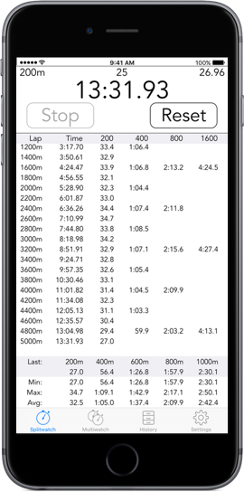
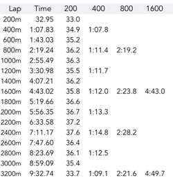
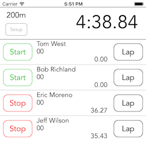
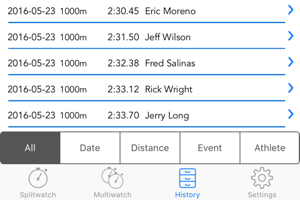
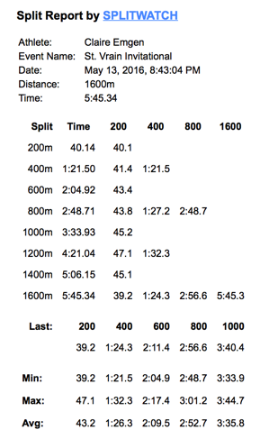
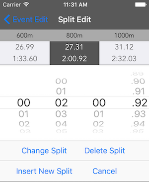

Splitwatch
A powerful interval stopwatch on your iPhone or iPad.
Splitwatch is ideal for track and swimming coaches and fans.
v2.3 - Runs on any iOS device running iOS 8.1 or later.


- iPad Support - iPad is now supported with custom layouts for the larger displays.
- Expanded Email Reports - Email split reports are expanded to include multiple events in a single report.
- AirPrint - Now you can print your split reports with any AirPrint compatible printer.
- Split Detail Summary Min/Max Highlighting - Tap any Min or Max time in the split detail summary and that split is highlighted in the split detail view (works in Splitwatch view and also History view). Makes it easy to quickly analyze and identify segments of a race where the pace was fastest and slowest.
- Movable Multiwatches - Multiwatch timers can be dragged to change order, even while the timers are running.
- Multiwatch Setup - Multiwatch setup order can also be changed by dragging.
- Improved Timers - All timers now update while scrolling.
- History - Returning to History view after drill down to a single event now remembers where you were. This makes reviewing a group of events easier.
New Features in v2.3 (available now)


Splits On the Fly
Automatically calculates the split breakdown as you are timing. For Example: if set for 200m intervals, would yield each 200m, 400m, 800m, and 1600m (or 1000m if in Kilo split mode)
- Metric or English Distances - 25, 50, 100, 200, or 400 meters or 25, 50, 110, 220, or 440 yards
- Lap Mode - Record events where the intervals are not tied to a specific distance
- Furlong Mode - For horse racing, distances are displayed in fractions of a mile instead of yards.
- Running / Lap Time - Tap the main time display to swap the running time with the lap time.
- New Feature! - All timers now update even while scrolling long lists of splits.


Multiwatch
Time any number of competitors simultaneously. Start the watches at the same time or independently. Splitwatch also comes with a number of features to help ensure accuracy of timing. This is especially helpful when timing multiple athletes.
- Flashes each time the start/lap/stop buttons are hit for positive tap feedback
- Optionally produces a click sound for each start/lap/stop tap
- Optionally disables the lap button for 2 seconds to prevent unintentional double-taps
- New Feature! Change the order of timers by dragging, even while the watches are running!


History
Quickly recall any recorded timing event in the History view, including athlete name, event name, race start date and time, final time, splits, and split breakdown.
- Sort timing events by date, event distance, event name, or athlete name
- In addition to closing splits, Splitwatch provides split summary info with Min, Max, and Avg lap times.


Email Report
Email a split report with all the info and split breakdown right from Splitwatch.
New Feature! Now generate reports that contain multiple events in the same email. For example, send splits for all three races for an athlete at a meet in a single email.
New Feature! Now you can print your split reports with any AirPrint compatible printer.


Split Editing
It's easy to fix timing glitches. Individual splits are fully editable, including: add, change, and delete. You can also change the base units and split modes for any event in your database.